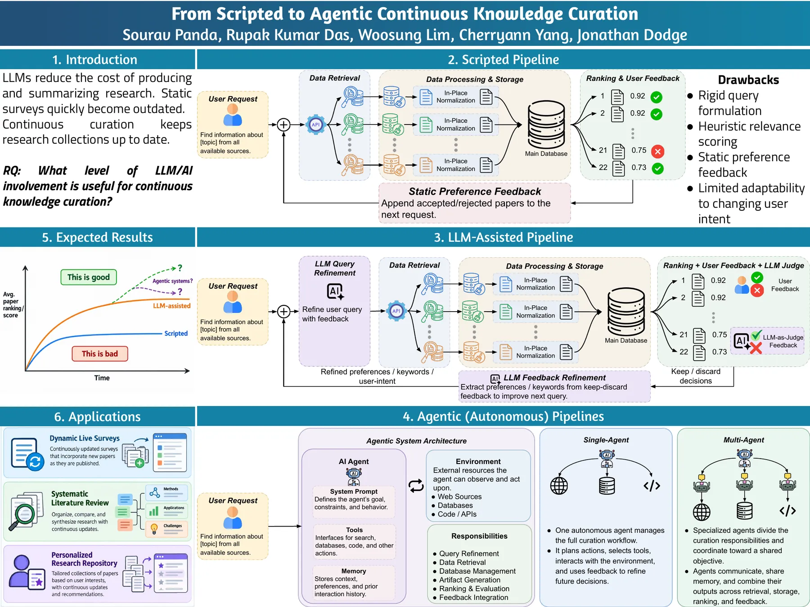

Research
Continuous Knowledge Curation
Agentic pipelines that search for research papers in rounds, built in the PLAINTEXT Lab. Three locally hosted language models refine the queries and judge relevance across more than 2,000 papers, and each keep or discard decision shapes the next round.
- Query A language model refines the search query.
- Retrieve Papers come in from Semantic Scholar, OpenAlex and arXiv, and duplicates are merged.
- Judge A language model scores each paper for relevance.
- Keep or discard Each decision shapes the query for the next round.
The scripted pipeline
The scripted version is a loop in Python: retrieve, normalize, store, rank, feedback. It pulls papers from Semantic Scholar, OpenAlex and arXiv and deduplicates them by identifier into SQLite. It ranks the merged pool with SBERT plus weighted lexical, recency and citation scores, then expands the next query with keywords from the top results.
Adding language models
The agentic version puts a language model at three bounded points: expanding the query, scoring relevance as a judge, and turning keep and discard decisions into preference text for the next round. User feedback stays primary.
The three models are hosted locally through LM Studio. Around them I built agent harnesses with system prompts, 5+ custom tools, behavioral modes and evaluation frameworks. The same ETL pipelines feed Dynamic Live Surveys, handling 5,000+ research papers through extraction, transformation and loading.
We compared the scripted and agentic workflows over successive search rounds, and I co-authored and presented the poster at the college’s inaugural AI in Research Symposium.

What it can’t tell me yet
I can run this system end to end. I could also revise the prompt until the judge looked better. What I could not say is whether its score was valid, or whether a person reading it would know when to overrule it. That is the question I want to work on next.